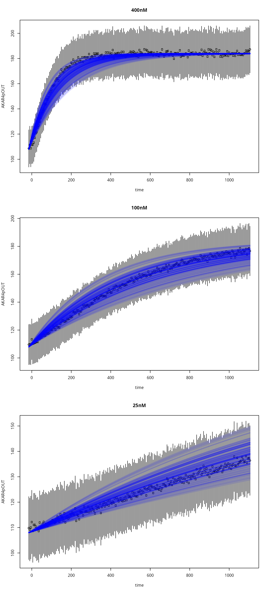

Simulate
simulate.RmdThe main method for model simulation is:
This has created a closure (simulate), with a single
argument par:
sr <- simulate(par) # simulation resultsThe simulate function remembers the experiments that it
was created with and produces results of the same length as
experiments.
It is often convenient to modify the parameters before passing them to the model. Here are possible reasons:
- the uncertainty is log normal
- you want to pass
exp(log(p) + rnorm(...))to the model rather thanpitself
- you want to pass
- the Markov chain is in log-space
- the sampler uses
p, but the model needs10^p
- the sampler uses
- the model parameters are linearly dependent
- we to reliably pass
c(p[1]+p[2], p[2]+p[3], p[3]-p[1])to the model, every time
- we to reliably pass
In such cases, you can write a mapping function, and use the
parMap argument-slot of simulator.c:
library(uqsa)
library(SBtabVFGEN)
f <- uqsa_example("AKAR4cl")
cl <- readRDS(uqsa_example("AKAR4cl",f="RDS"))
sb <- SBtabVFGEN::sbtab_from_tsv(f) # a list of data.frames
#> [tsv] file[1] «100nM.tsv» belongs to Document «AKAR4cl»
#> I'll take this as the Model Name.
#> 100nM.tsv 25nM.tsv 400nM.tsv Compound.tsv Experiments.tsv Output.tsv Parameter.tsv Reaction.tsv
ex <- SBtabVFGEN::sbtab.data(sb,cl) # includes the data
parMap <- function(p){
return(exp(p))
}
modelName <- checkModel(comment(sb),uqsa_example("AKAR4cl",pat="_gvf.c$"))
#> building a shared library from c source, and using GSL odeiv2 as backend (pkg-config is used here).
#> cc -shared -fPIC `pkg-config --cflags gsl` -o './AKAR4cl.so' '/tmp/Rtmpw3ZuVZ/temp_libpath2582957539340/uqsa/extdata/AKAR4cl/AKAR4cl_gvf.c' `pkg-config --libs gsl`
sim <- simulator.c(ex,modelName,parMap)
#> Loading required package: rgslFor the first use-case listed in the motivation:
t <- as.numeric(ex[[1]]$outputTimes)
par <- log(sb$Parameter[["!DefaultValue"]])
np <- length(par)
stdv <- 0.2
REPS <- 50
P <- matrix(rnorm(np*REPS,mean=par,sd=stdv),np,REPS)
dim(P)
#> [1] 3 50
stm <- Sys.time()
sr <- sim(P)
etm <- Sys.time()
difftime(etm,stm)
#> Time difference of 0.02982306 secsAll trajectories, randomly sampled from log-space:
T <- rep(c(t,NA),REPS) # the NA value will break the line
Z <- as.numeric(sr[[1]]$func[1,c(seq_along(t),NA),]) # at the end, so it doesn't loop
plot(T,Z,type='l',bty='n')
points(t,ex[[1]]$outputValues[[1]])
file.remove("AKAR4cl.so")
#> [1] TRUE